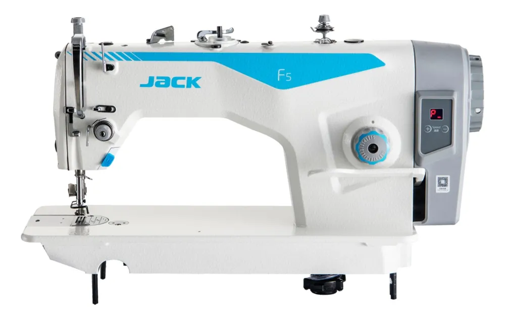

Назад
Описание: Jack F5 - это высокоскоростная промышленная швейная машина с интеллектуальными функциями.
Характеристики:
- Скорость: до 5000 стежков в минуту
- Энергосбережение: до 70%
- Автоматическая обрезка нити
- LED-подсветка рабочей зоны
Цена: 280$